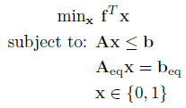
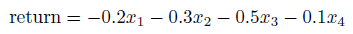
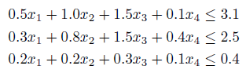
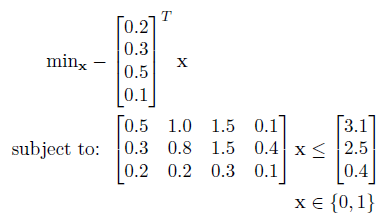

Binary Integer Linear Program (BILP)
Introduction
A binary integer linear program has the following form:

Where f is a n x 1 vector containing the linear objective function, which is subject to the following constraints:
Linear Inequalities*
A is a m x n
sparse matrix, b is a m x 1 vector
Linear Equalities*
Aeq is a k x n sparse matrix, beq
is a k x 1 vector
Binary Constraints
All decision variables must be a binary integer (0,1)
The goal is to minimize the objective function by selecting a value of x that also satisfies all constraints.
*Your problem description will either use Linear Inequalties and Linear Equalities OR Linear Row Constraints. See the constraint information page.
Example Problem[3]
There are four possible projects, which each run for 3 years and have the following characteristics:
| Capital Requirements ($m) | |||||
| Project | Return ($m) | Year | 1 | 2 | 3 |
| 1 | 0.2 | 0.5 | 0.3 | 0.2 | |
| 2 | 0.3 | 1.0 | 0.8 | 0.2 | |
| 3 | 0.5 | 1.5 | 1.5 | 0.3 | |
| 4 | 0.1 | 0.1 | 0.4 | 0.1 | |
| Available Capital ($m) | 3.1 | 2.5 | 0.4 | ||
The objective is to decide which projects to run in order to maximise the total return. Write the equations for this problem assuming the following decision variable name strategy:
If x1 is 1, then run project 1, otherwise do not run it. Subscripts indicate each project.
The objective function is to maximize the return, thus we negate our objective:

And the capital constraints are:

The objective and constraints can now be written in standard form:

This can be solved using the OPTI Toolbox as follows:
% Objective
f = -[0.2;0.3;0.5;0.1];
% Constraints
A = [0.5 1.0 1.5 0.1;
0.3 0.8 1.5 0.4;
0.2 0.2 0.3 0.1];
b = [3.1;2.5;0.4];
int = 'BBBB';
% Build OPTI Problem
Opt = opti('f',f,'ineq',A,b,'int',int)
% Solve
x = solve(Opt)
And the solution is:
x =
0
0
1
1
Indicating the optimal solution is to run projects 3 and 4.
Considerations
BILP problems must only have binary integer decision variables, normal integer or continuous variables are not allowed. For problems with integer or continuous variables use an MILP instead. Note also while bounds are strictly allowable in a BILP, they are not used as they are effectively redundant based on the binary integer constraint, provided legal bounds are entered. OPTI Toolbox will automatically ignore any bounds entered.
Copyright © 2011-2013 Jonathan Currie (I2C2)